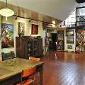
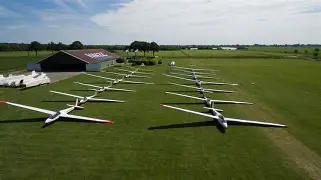

Museum Lammert Boerma is opgericht in 1993 en bevindt zich in het veenkoloniaal dorp Borgercompagnie — de geboortegrond van de kunstenaar zelf. Het museum beslaat ongeveer 450 m², verdeeld over 13 vertrekken: expositieruimtes, ateliers, werkplaats en woonruimtes. Bezoekers kunnen er schilderijen, beelden, tekeningen, foto’s (waarvan zwart‑wit foto’s zijn ingekleurd met olieverf), en andere kunstwerken bewonderen — een overzicht van leven, wonen én werken van de kunstenaar. Daarnaast is er een collectie oldtimer‑bromfietsen en motorfietsen uit de jaren ’50 en ’60 te zien, opgesteld in de werkplaats. Het museum wordt wel eens omschreven als een modern “Rubens-/Rembrandthuis” — met het verschil dat de kunstenaar nog leeft.

Noord Nederlands Zweefvliegclub
De Noord Nederlandse Zweefvliegclub (NNZC) in Borgercompagnie is een levendige vereniging voor zowel beginners als ervaren zweefvliegers. Het vliegveld beschikt over start- en landingsvelden, een hangaar en clubgebouw. Bezoekers kunnen mee voor introductievluchten en het prachtige veen- en polderlandschap vanuit de lucht bewonderen. De club organiseert daarnaast regelmatig cursussen en evenementen voor leden en geïnteresseerden.